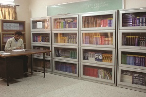
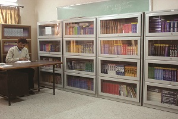
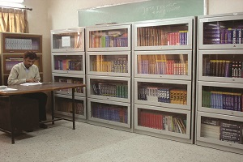
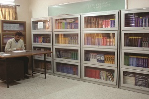

 

The Institute of Professional Studies was set up in May 2000 by the Executive Council of the University of Allahabad under Section 44 of the Act. It is an institute established and maintained by the University. The basic objective is to develop linkages between the 'world of learning' and the 'world of work' through professional courses. The Institute of Professional Studies (IPS) has been created to provide short, medium and long-term professional courses on a regular and self-financing basis under the aegis of Centres dedicated to specific areas. Presently the Institute has Four centres:
The Centre of Computer Education (CCE) was established under Institute of Professional Studies, University of Allahabad in December 2000. It is an institute established and maintained by the University. The institute is located in the Science Faculty (formerly known as Muir Central College) Campus of the University of Allahabad. The basic objective is to strengthen the linkages between the 'world of learning' and the 'world of work' through professional courses. The centre offers BCA and MCA courses & D.Phil. in the areas of Computer Science and Computer Applications.